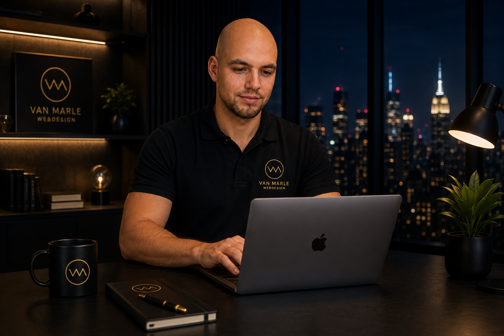

Scene 01 · het doel
Uw website wordt uw beste verkoper
Een heldere structuur, rustige beweging en teksten die uitleggen waarom u de juiste keuze bent — tot de bezoeker op ‘neem contact op’ klikt.
Van Marle Webdesign · websites met ziel
Cinematische websites met 3D en beweging — ontworpen en met de hand gebouwd door één vakman. Rustig in vorm, helder in taal, eerlijk in afspraken.
Geen bouwpakket
Elk project begint bij uw verhaal en uw klant. Geen standaardthema, geen overbodige plug-ins: één ontwerp, precies voor u getekend en regel voor regel gebouwd.
Van kennismaking tot livegang
Scene 01 · het doel
Een heldere structuur, rustige beweging en teksten die uitleggen waarom u de juiste keuze bent — tot de bezoeker op ‘neem contact op’ klikt.
Scene 02 · vindbaarheid
Schone code, snelle laadtijden, een complete sitemap en teksten rond de woorden waarop uw klant echt zoekt. Mooi én vindbaar.
Scene 03 · 3D en beweging
Beweging leidt de aandacht en legt uit. Alles wordt getest op snelheid, zodat de wauw-factor uw bezoeker nooit laat wachten.
Scene 04 · samenwerking
U werkt direct met de maker. Korte lijnen, eerlijke taal en afspraken die staan — ook als het even tegenzit.
Scene 05 · oplevering
Een vaste planning van kennismaking tot livegang op uw eigen domein. Daarna blijf ik bereikbaar voor onderhoud, uitbreiding en groei.
Wie het bouwt
Ik ben Sven van Marle. Ik bouw websites voor ondernemers die serieus genomen willen worden: aannemers, ateliers, adviseurs en jonge merken. Geen verkooppraatjes, wel eerlijk advies over wat u nodig hebt — en wat niet.
Mijn werk rust op twee dingen: technisch vakmanschap en een christelijke werkethiek. Dat betekent afspraken nakomen, transparant zijn over prijs en planning, en uw belang boven mijn omzet stellen.

Het fundament
“Zo de HEERE het huis niet bouwt, tevergeefs arbeiden zijn bouwlieden daaraan.”
Psalm 127 : 1 · Statenvertaling
Een website is bouwwerk. Techniek en smaak brengen u een heel eind, maar de manier waarop iets gebouwd wordt zegt evenveel als het resultaat. Daarom werk ik met open kaart, houd ik me aan mijn woord en lever ik werk waar ik met een gerust hart mijn naam onder zet.
Vaste prijzen, geen verrassingen achteraf en geen functies die u niet nodig hebt. Als iets goedkoper of eenvoudiger kan, zeg ik dat.
“Alwat gij doet, doet dat van harte, als voor den Heere.” — Kolossenzen 3 : 23Afspraken staan. U weet wanneer u iets van mij hoort, wat er opgeleverd wordt en wanneer de site live gaat.
“Bevel den HEERE uw werken, en uw gedachten zullen bevestigd worden.” — Spreuken 16 : 3Uw succes is de opdracht. Ik denk mee over uw klant, uw aanbod en uw groei — ook na de oplevering.
“Laat ons niet liefhebben met den woorde, maar met de daad en waarheid.” — 1 Johannes 3 : 18Vier demo’s
Eén live project en drie demo’s die tonen wat er mogelijk is. Elke demo is volledig door mijzelf ontworpen en gebouwd — zodat u ziet wat u koopt voordat u iets betaalt.
Live project · bouw & klussen
Een 3D-website voor een klusbedrijf: een interactief huis dat meebeweegt met de scroll, duidelijke diensten en een aanvraagformulier dat direct binnenkomt.
Demo · fotografie & studio
Een donkere, rustige portfolio waarin het beeld alle ruimte krijgt. Zachte overgangen, grote typografie en een galerij die als een film afspeelt.
Demo · zakelijke dienstverlening
Vertrouwen als ontwerpdoel: heldere structuur, leesbare cijfers, korte teksten en een contactroute die in twee klikken klaar is.
Demo · ambacht & maatwerk
Warm, rustig en tactiel. Materialen in beeld, een verhaal per project en een prijsindicatie die vragen wegneemt voordat ze gesteld worden.
Het proces
Geen langdurige trajecten en geen onduidelijke facturen. Vier stappen, een vaste planning en helder wat er van u verwacht wordt.
Dag 1 · gratis
Een open gesprek van een half uur. Ik luister naar uw doel, uw klant en wat u nu mist. U krijgt direct advies — ook als we niet samenwerken.
01Dag 2 – 4
Ik teken de structuur, de sfeer en de teksten. U ziet en keurt het ontwerp goed voordat er één regel code wordt geschreven.
02Week 1 – 2
Met de hand gebouwd: snel, veilig en vindbaar. Beweging en 3D worden toegevoegd waar ze uw boodschap versterken, nooit als opsmuk.
03Binnen 2 weken live
De site gaat live op uw eigen domein, met sitemap, SSL en SEO in orde. Daarna blijf ik bereikbaar voor updates, uitbreiding en groei.
04Klaar om te bouwen
Vertel me kort waar u naartoe wilt. Binnen één werkdag hoort u wat er mogelijk is, wat het kost en wanneer u live kunt zijn.